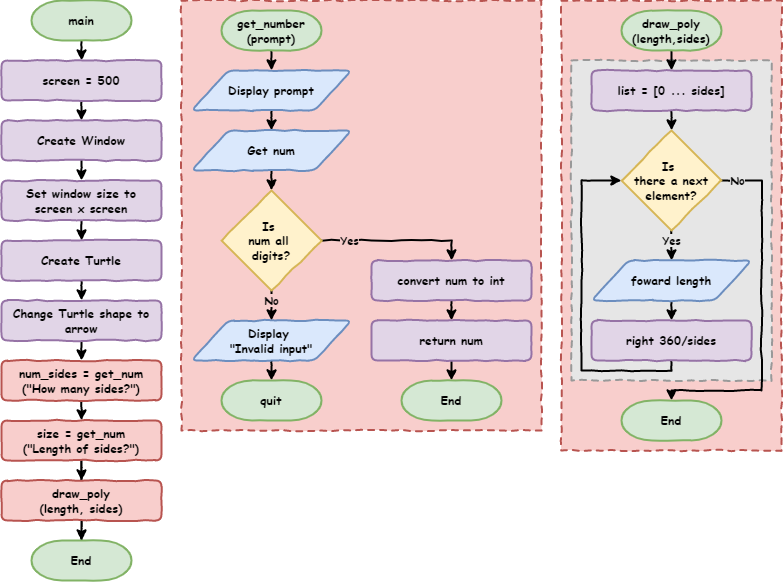

Python Turtle - Lesson 5#
Part 1: Branching#
Branching control structure#
The branching control structure allows the program’s flow it take alternative paths. Let’s use a practical example to better understand this.
We’re going to use the lesson_4_pt_2.py file. You can either save it as lesson_5_pt_1a.py or download and use the lesson_5_pt_1a.py file.
1import turtle
2
3
4def draw_poly(length, sides):
5 for i in range(sides):
6 my_ttl.forward(length)
7 my_ttl.right(360 / sides)
8
9
10# setup window
11screen = 500
12window = turtle.Screen()
13window.setup(screen, screen)
14
15# create instance of turtle
16my_ttl = turtle.Turtle()
17my_ttl.shape("turtle")
18
19num_sides = int(input("How many sides?> "))
20size = int(input("Length of sides?> "))
21
22draw_poly(size, num_sides)
Run the program, and at the prompt, instead of providing a number, provide a word, for example dog.
This will raise the following error:
1Traceback (most recent call last):
2 File "<string>", line 19, in <module>
3ValueError: invalid literal for int() with base 10: 'dog'
This error occurs because in line 19 we are trying to convert the literal (string) dog into an integer. Since dog is not a whole number, it causes an error.
What we need to do is check that user has entered a whole number before converting it into an integer.
Create a new file in, enter the code below then save it as lesson_5_pt_1b.py.
1user_value = input("Enter a number: ")
2
3print(user_value.isdigit())
PRIMM:
Predict what you think will happen when you run the code twice:
first time enter the value
10second time enter the value
dog
Run the code. Did it follow your predictions?
Let’s investigate that code.
Remember that Python inputs are strings. Strings have special operations called methods. One of those is the isdigit method. isdigit returns the Boolean value of True if all the characters in a string are digits.
String Methods
Python has many useful string methods. If you want to explore them W3Schools’ Python String Methods is a good place to start.
We can tell if the user’s input is a number or not. Now we need to tell the computer how to respond to this information.
The if statement#
Adjusts your lesson_5_pt_1b.py code so it is the same as the code below.
1user_value = input("Enter a number: ")
2
3if user_value.isdigit():
4 print("That's a number")
PRIMM
Predict what you think will happen when you run the code twice:
first time enter the value
10second time enter the value
dog
Run the code. Did it follow your prediction?
Let’s investigate that code.
Flowcharts#
Flowcharts are great at demonstrating how selection works. We have already used the condition symbol (diamond) in our for loops. They are also used for the conditions in if statements.
Code flowchart:

Code breakdown:
Line 3:if user_value.isdigit():This defines the
ifstatement.The
iftells Python that this is anifstatement.The next part is called a conditional.
Conditionals are operations that return a Boolean value (
TrueorFalse).This specific conditional is
user_value.isdigit()We already know the results from our previous work:
10→Truedog→False
Ends with
:This has the same use as
forloops and functions. It indicates that an indented code block follows.
The indented code block, will only run if the condition returns
True. In our example:10→user_value.isdigit()returnsTrue→ run indented code blockdog→user_value.isdigit()returnsFalse→ don’t run indented code block
Line 4:print("That's a number")This is the indented code block that will run if
user_value.isdigit()isTrue
We can now respond to a digit being entered. But what if we want to provide a different response when user_value.isdigit() is False?
The if … else statement#
Adjust your lesson_5_pt_1b.py code by adding lines 5 and 6 in the code below.
1user_value = input("Enter a number: ")
2
3if user_value.isdigit():
4 print("That's a number")
5else:
6 print("That's not a number")
PRIMM
Predict what you think will happen when you run the code twice:
first time enter the value
10second time enter the value
dog
Run the code. Did it follow your prediction?
Let’s investigate that code.
Code flowchart:

Code breakdown:
Lines 3and4operate the same as the previous code.Line 5-else:The
elsestatement uses theifstatement’s condition.In this case, it says: if
user_value.isdigit()isFalsethen run the following indented code block.The
:tells Python that an indented code block follows.
Line 6-print("That's not a number")This is the indented code block that will run if
user_value.isdigit()isFalse
To check out what is happening in detail stepping through the code with the debugger. Use the inputs of 10 and dog.
Using if … else to capture errors#
Go back to lesson_5_pt_1a.py and adjust the code by replacing line 19 with the following code:
1# get user input
2num_sides = input("How many sides?> ")
3if num_sides.isdigit():
4 num_sides = int(num_sides)
5else:
6 print("Invalid input")
7 quit()
Your code should look like the code below:
1import turtle
2
3
4def draw_poly(length, sides):
5 for i in range(sides):
6 my_ttl.forward(length)
7 my_ttl.right(360 / sides)
8
9
10# setup window
11screen = 500
12window = turtle.Screen()
13window.setup(screen, screen)
14
15# create instance of turtle
16my_ttl = turtle.Turtle()
17my_ttl.shape("turtle")
18
19# get user input
20num_sides = input("How many sides?> ")
21if num_sides.isdigit():
22 num_sides = int(num_sides)
23else:
24 print("Invalid input")
25 quit()
26
27size = input("Length of sides?> ")
28
29draw_poly(size, num_sides)
Then replace line 27 with this code:
1size = input("Length of sides?> ")
2if size.isdigit():
3 size = int(size)
4else:
5 print("Invalid input")
6 quit()
Your code should look like the code below:
1import turtle
2
3
4def draw_poly(length, sides):
5 for i in range(sides):
6 my_ttl.forward(length)
7 my_ttl.right(360 / sides)
8
9
10# setup window
11screen = 500
12window = turtle.Screen()
13window.setup(screen, screen)
14
15# create instance of turtle
16my_ttl = turtle.Turtle()
17my_ttl.shape("turtle")
18
19# get user input
20num_sides = input("How many sides?> ")
21if num_sides.isdigit():
22 num_sides = int(num_sides)
23else:
24 print("Invalid input")
25 quit()
26
27size = input("Length of sides?> ")
28if size.isdigit():
29 size = int(size)
30else:
31 print("Invalid input")
32 quit()
33
34draw_poly(size, num_sides)
Let’s test this code to see if it works.
PRIMM
Predict what you think will happen when you run the code in the following scenarios:
valid
sidesvalue and validsizevaluevalid
sidesvalue and invalidsizevalueinvalid
sidesvalue and validsizevalueinvalid
sidesvalue and invalidsizevalue
Run the code. Did it follow your prediction?
Let’s investigate that code.
More testing tips
When testing branching code you need to test all possible paths.
Test
ifstatements for bothTrueconditions andFalseconditions.This code had four possible branches so we needed to test all four of them
Code flowchart:

Code breakdown:
Line 19:# get user input→ a comment used to structure the codeLine 20:num_sides = input("How many sides?> ")→ accepts user input and assigns it tonum_sidesLine 21:if num_sides.isdigit():→ tests ifnum_sidesonly contains numbersif
num_sides.isdigit()isTruethen run the code block fromline 20
Line 22:num_sides = int(size)takes the value assigned tonum_sidesconverts it to an integer, then reassigns it tonum_sidesLine 23:else:→ ifnum_sidesis not all numbers execute following code block (lines 22to23)Line 24:print("Invalid input")→ informs the user of their mistakeLine 25:quit()→ exits the programLine 27:size = input("Length of sides?> ")→ accepts user input and assigns it tosizeLine 28:if size.isdigit():→ tests ifsizeonly contains numbersIf
size.isdigit()isTruethen run the code block fromline 27
Line 29:size = int(size)takes the value assigned tosizeconverts it to an integer, then reassigns it tosizeLine 30:else:→ ifsizeis not all numbers execute following code block (lines 29to30)Line 31:print("Invalid input")→ informs the user of their mistakeLine 32:quit()→ exits the program
Refactor Code - DRY#
Looking at our code, does it pass the DRY test?
The # get user input section from line 17 to 30 definitely has repetition in it. Twice the code:
asks the user for input
checks if that input is all numbers
either converts or quits the program depending on the
ifstatement.
During all this, the only parts of the code that differs are:
Line 20and27theinputprompt is different:Line 20→"How many sides?> "Line 27→"Length of sides?> "
in their respective sections different variable names are used:
Lines 20to25→num_sidesLines 27to32→size
This looks like a prefect opportunity to refactor the code using a function.
What is refactoring?
Refactoring is changing your code without changing the way it works. This is normally done to make code more efficient or more maintainable.
Efficient code uses less computing resources (processing power, storage, internet bandwidth etc.).
Maintainable code is easier for programmers to understand, fix, update and enhance.
To refactor our code we need to add the following function at line 10 of your code:
def get_number(prompt):
num = input(prompt)
if num.isdigit():
return int(num)
else:
print("Invalid input")
quit()
Then remove the code under # get user input from lines 19 to 32, and replace it with two calls to the function:
# get user input
num_sides = get_number("How many sides?> ")
size = get_number("Length of sides?> ")
In the end your code should look like the code below:
1import turtle
2
3
4def draw_poly(length, sides):
5 for i in range(sides):
6 my_ttl.forward(length)
7 my_ttl.right(360 / sides)
8
9
10def get_number(prompt):
11 num = input(prompt)
12 if num.isdigit():
13 return int(num)
14 else:
15 print("Invalid input")
16 quit()
17
18
19# setup window
20screen = 500
21window = turtle.Screen()
22window.setup(screen, screen)
23
24# create instance of turtle
25my_ttl = turtle.Turtle()
26my_ttl.shape("turtle")
27
28# get user input
29num_sides = get_number("How many sides?> ")
30size = get_number("Length of sides?> ")
31
32draw_poly(size, num_sides)
When you refactor code, it is important to ensure the code still works the same. So run the code to ensure that it still works the same way.
Remember to test all 4 possible branches:
valid
sidesvalue and validsizevaluevalid
sidesvalue and invalidsizevalueinvalid
sidesvalue and validsizevalueinvalid
sidesvalue and invalidsizevalue
If your code still works the same, let’s investigate the code we added.
Code flowchart:

Code breakdown:
The
get_numberfunction:def get_number(prompt):→ defines our new function with one argumentprompt:we observed that the prompt was one of the differences between our two blocks of similar code
using this argument means we can provide a different prompt each time we call the function
num = input(prompt)→ uses thepromptargument and assigns the user input tonumif num.isdigit():→ checks ifnumonly contains numbersreturn int(num)→ converts the value assigned tonumthen sends it to the main program:returnis newreturnsends a value back to the main program and then ends the function.
else:→ ifnumdoes not contain only numbers, run the following code blockprint("Invalid input")→ informs the user their input is not correctquit()→ exits the program
num_sides = get_number("How many sides?> ")→ calls theget_numberfunctionget_number()→ calls the function"How many sides?> "→ provides the prompt string to the functionnum_sides =takes the value returned by the function and assigns it tonum_sides
size = get_number("Length of sides?> ")→ calls theget_numberfunctionget_number()→ calls the function"Length of sides?> "→ provides the prompt string to the functionsize =takes the value returned by the function and assigns it tosize
Playing with colour#
Let’s keep adding features to our program. Turtle allows you to also change the colour of your shapes and lines using the method color:
color accepts two arguments:
first argument → line colour
second argument → fill colour
Spelling colour / color
Like most programming languages, Python uses US spelling. Using Australian spelling (eg. colour) will generate an error.
It up to the programmer to decide what spelling to follow in their naming of variables and functions. I choose to use the US spelling. The consistent spelling reduces the likelihood of errors.
Now let’s change the colour of our shape.
Make the changes in code the code below to:
Line 5Line 6Line 35
1import turtle
2
3
4def draw_poly(length, sides, color):
5 my_ttl.color("black", color)
6 my_ttl.begin_fill()
7 for i in range(sides):
8 my_ttl.forward(length)
9 my_ttl.right(360 / sides)
10 my_ttl.end_fill()
11
12
13def get_number(prompt):
14 num = input(prompt)
15 if num.isdigit():
16 return int(num)
17 else:
18 print("Invalid input")
19 quit()
20
21
22# setup window
23screen = 500
24window = turtle.Screen()
25window.setup(screen, screen)
26
27# create instance of turtle
28my_ttl = turtle.Turtle()
29my_ttl.shape("turtle")
30
31# get user input
32num_sides = get_number("How many sides?> ")
33size = get_number("Length of sides?> ")
34
35draw_poly(size, num_sides, "red")
PRIMM
Predict what you think will happen when you run the code:
Run the code. Did it follow your prediction?
Let’s investigate that code.
Code breakdown:
def draw_poly(length, sides, color):→ accepts a third argumentcolormy_ttl.color("black",color)→ sets the turtle colourline colour →
"black"fill colour → the value in the
colorargument
Turtle colours
Turtle allows the use of named colours. It also allows RBG and Hexadecimal colours, but named colours are enough for our needs.
Now that we can change colour, can we let the user choose between red, blue and green for the fill colour?
We will need to capture the error when the user enters anything other than "red", "blue" or "green". That means using an if statement, but the if … else statement only allows two branches. We need to have four.
To choose between three or more branches we need to learn about the last part of the if statement: elif.
The if … elif … else statement#
The elif statement is effectively a else + if statement. It allows branching between multiple blocks of code. The best way to explore this is by using it in our code.
Create a function so the user can choose between red, blue and green for the fill colour.
Adjust your code so it is the same as the code below.
Changes are in:
Lines 22to32Line 47Line 49
1import turtle
2
3
4def draw_poly(length, sides, color):
5 my_ttl.color("black", color)
6 my_ttl.begin_fill()
7 for i in range(sides):
8 my_ttl.forward(length)
9 my_ttl.right(360 / sides)
10 my_ttl.end_fill()
11
12
13def get_number(prompt):
14 num = input(prompt)
15 if num.isdigit():
16 return int(num)
17 else:
18 print("Invalid input")
19 quit()
20
21
22def get_color():
23 color = input("Fill colour (red, blue, green)?> ").lower()
24 if color == "red":
25 return color
26 elif color == "blue":
27 return color
28 elif color == "green":
29 return color
30 else:
31 print("Invalid input")
32 quit()
33
34
35# setup window
36screen = 500
37window = turtle.Screen()
38window.setup(screen, screen)
39
40# create instance of turtle
41my_ttl = turtle.Turtle()
42my_ttl.shape("turtle")
43
44# get user input
45num_sides = get_number("How many sides?> ")
46size = get_number("Length of sides?> ")
47fill = get_color()
48
49draw_poly(size, num_sides, fill)
PRIMM
Predict what you think will happen when you run the code:
Run the code. Did it follow your prediction?
Let’s investigate that code.
There are a few new concepts for us to breakdown:
Line 23:color = input("Fill colour (red, blue, green)?> ").lower()→lower()is newlower()is another string methodit converts all the letters in a string to their lowercase version
Line 24:if color == "red":→ tests if the user inputted"red"Line 25:return colorsends the value of
color(in this case"red"back to the main program)ends the function
Line 26:elif color == "blue":is only executed when the condition in
line 21isFalsechecks if the value of
coloris"blue"
Line 27:return colorsends the value of
color(in this case"blue"back to the main program)ends the function
Line 28:elif color == "green":is only executed if the conditions in
line 21andline 23are bothFalsechecks if the value of
coloris"green"
Line 29:return colorsends the value of
color(in this case"green"back to the main program)ends the function
Line 30:else:is only executed if the conditions in
line 21,line 23andline 24are allFalse
Line 31andline 32are the same as theget_numberfunction
Code flowchart:

The if … elif … else statement is very useful and flexible. You will use it in various configurations, so let look at it’s rules.
if…elif…else structure
The structure of a full if … elif … else statement is:
the
ifcomponentalways at the beginning of an
if…elif…elsestatementthe only compulsory component
there can only be one
ifperif…elif…elsestatement
the
elifcomponentmust come after the
ifstatement and before theelsestatementis optional
there can be as many
elifcomponents as neededit is only used when all the conditions before it are
False
the
elsecomponentmust be at the end of an an
if…elif…elsestatementit is optional
there can only be one per
if…elif…elsestatementit is only used when all the conditions before it are
False
Part 1 Exercises#
In this course, the exercises are the make component of the PRIMM model. So work through the following exercises and make your own code.
Exercise 1#
Download lesson_5_ex_1.py file and save it to your lesson folder. Below is its code.
1# Almy_ttl's security guard program
2
3######################################################
4## Write a program that asks for a person's name ##
5## and then grants entry of that person is Almy_ttl ##
6## everyone else is told, politely, to go away ##
7######################################################
Follow the instructions in the comments and use your Python knowledge to create a password checker. Remember to apply the DRY principle
Exercise 2#
Download lesson_5_ex_2.py file and save it to your lesson folder. Below is its code.
1# Almy_ttl's security guard program
2
3friends = "Bruce"
4
5######################################################
6## Write a program that asks for a person's name ##
7## and then grants entry of that person is Almy_ttl ##
8## or a friend of Almy_ttl. ##
9## Everyone else is told, politely, to go away ##
10######################################################
Follow the instructions in the comments and use your Python knowledge to create an enhanced password checker. Remember to apply the DRY principle
Exercise 3#
Download lesson_5_ex_3.py file and save it to your lesson folder. Below is its code.
1import turtle
2
3#####################################################
4## Adjust the code below to allow the user to ##
5## choose the coordinates where the shape is drawn ##
6#####################################################
7
8
9def draw_poly(length, sides, color):
10 my_ttl.color("black", color)
11 my_ttl.begin_fill()
12 for i in range(sides):
13 my_ttl.forward(length)
14 my_ttl.right(360 / sides)
15 my_ttl.end_fill()
16
17
18def get_number(prompt):
19 num = input(prompt)
20 if num.lstrip("-").isdigit():
21 return int(num)
22 else:
23 print("Invalid input")
24 quit()
25
26
27def get_color():
28 color = input("Fill colour (red, blue, green)?> ").lower()
29 if color == "red":
30 return color
31 elif color == "blue":
32 return color
33 elif color == "green":
34 return color
35 else:
36 print("Invalid input")
37 quit()
38
39
40def move_pen():
41 # write your code here to get coordinates from user #
42
43
44# setup window
45screen = 500
46window = turtle.Screen()
47window.setup(screen, screen)
48
49# create instance of turtle
50my_ttl = turtle.Turtle()
51my_ttl.shape("turtle")
52
53# get user input
54num_sides = get_number("How many sides?> ")
55size = get_number("Length of sides?> ")
56fill = get_color()
57
58draw_poly(size, num_sides, fill)
Follow the instructions in the comments (check line 41) and use your Python knowledge to enhance our shape drawing code. Remember to apply the DRY principle.
Tutorial 2: While Loop#
In Python we have two forms of iteration. We have already looked at the for loop. In the section we will look at the other iteration control structure, the while loop.
The two types of loops map to two different types of iteration:
definite iteration
Is used when you do know how many times the loop will need to run.
definite iteration uses
forloops since they loop for a set number of times.
indefinite iteration
Is used when you don’t know how many times the loop will need to run.
indefinite iteration uses
whileloops since they will loop as long as the condition isTrue
Card dealing is a good analogy of the definite and indefinite loops distinction:
Dealing for Uno:
How many cards does each player get?
The rules say seven.
So, we need to deal around the players seven times.
This is definite iteration as you know how many times you have to go around the group.
Dealing for Snap:
How many cards does each player get?
Depends on how many players, you need to keep going until you have dealt the whole deck.
This indefinite iteration as you will need to go around the group While there are still cards left in the deck.
In summary:
forloop is count controlled → we know how many times to run it.whileloop is condition controlled → we don’t know how many times to run it.
To understand while loops, let’s look at a number guessing game.
Number guessing game#
Download the lesson_5_pt_2.py file and save it to your lesson folder. Below is its code.
1import random
2
3
4def get_number(prompt):
5 num = input(prompt)
6 if num.isdigit():
7 return int(num)
8 else:
9 print("Invalid input")
10 quit()
11
12
13number = random.randint(1, 100)
14
15guess = get_number("Guess a number between 1 and 100> ")
16
17if guess == number:
18 print("Correct!")
19else:
20 print("Incorrect. The number was", number)
PRIMM
Predict what you think will happen when you run the code:
Run the code. Did it follow your prediction?
Let’s investigate that code.
What is the random module?
The random module gives us access to a range of functions that produce random results.
To see all the commands, you can go the W3Schools Python Random Module page.
Code breakdown:
Line 1:import random:We will be using the random function called
randint, so we need toimport random.
Lines 4to10are the sameget_numberfunction we have used previously.Line 13:number = random.randint(1,100)random.randint(1,100)use the
randintfunction from therandommodulegenerate a random integer between
1and100(inclusive)
number =→ assign the returned integer to the variablenumber
Line 15:guess = get_number("Guess a number between 1 and 100> ")get_number("Guess a number between 1 and 100> ")→ calls theget_numberfunction to ask the user for a numberguess =→ assigns the returned integer to the variableguess
Line 17:if guess == number:checks if the user’s guess and the random number are the same
the
==symbol is a comparison operator (see below). It checks if two values are the sameif the two values are the same → run the code block on
line 16
Line 19:else:→ if the user’s guess and the random number are not the same → run the code block online 18.
Comparison operators
A comparison operator compares two values and returns either True or False.
Python’s condition testing uses many comparison operators:
Operator |
Meaning |
|---|---|
|
checks if two values are the same (equal to) |
|
checks if two values are not the same (not equal to) |
|
checks if the left value is greater than the right value |
|
checks if the left value is less than the right value |
|
checks if the left value is greater than or equal to the right value |
|
checks if the left value is less than or equal to the right value |
So, we’ve made a simple game, but it is not a good one. A one-in-one-hundred chance of guessing a number is not going to keep the user entertained for too long. How about we adjust the code to allow the user to have ten guesses?
Now that sounds like iteration, but what kind? Since we know how many times this will need to loop (10), it’s definite iteration. Definite iteration requires a for loop.
Change your code so it looks like the code below. Specifically:
line 15→ provide user instructionslines 17to23→ place the guessing process within aforloopline 23→ make sure you remove the number revealline 25→ reveal the number after all 10 guesses have finished
1import random
2
3
4def get_number(prompt):
5 num = input(prompt)
6 if num.isdigit():
7 return int(num)
8 else:
9 print("Invalid input")
10 quit()
11
12
13number = random.randint(1, 100)
14
15print("You have 10 turns to guess a number between 1 and 100")
16
17for turn in range(10):
18 guess = get_number("Guess a number between 1 and 100> ")
19
20 if guess == number:
21 print("Correct!")
22 else:
23 print("Incorrect. Try again")
24
25print("The number was", number)
PRIMM
Predict what you think will happen when you run the code:
Run the code. Did it follow your prediction?
We won’t worry about investigating as there is nothing new in this code.
This is better, but still isn’t great. There is a one-in-ten chance of getting the right number. Each guess is a stab in the dark with no knowledge gained from the previous guesses. How about we give the user hints and let them know that their guess is too high or too low?
Change the if … else statement into the if … elif … else statement on lines 20 to 25 in the code below:
1import random
2
3
4def get_number(prompt):
5 num = input(prompt)
6 if num.isdigit():
7 return int(num)
8 else:
9 print("Invalid input")
10 quit()
11
12
13number = random.randint(1, 100)
14
15print("You have 10 turns to guess a number between 1 and 100")
16
17for turn in range(10):
18 guess = get_number("Guess a number between 1 and 100> ")
19
20 if guess > number:
21 print("Guess is too high")
22 elif guess < number:
23 print("Guess is too low")
24 else:
25 print("Correct!")
26
27print("The number was", number)
We’ve done a fair bit of coding without any serious testing. So this time lets keep running our code until we cover all four branches:
guess is too high
guess is too low
guess is correct
all 10 guess used up without guessing the number
This might be easier to do if we know the random number. Feel free to add a line that prints the random number, but make sure you comment it out after testing.
PRIMM
Predict what you think will happen when you run the code:
Run the code. Did it follow your predictions?
We won’t worry about investigating as there is nothing new in this code.
Did you identify a problem when the user guesses the number before using all ten guesses? The game prints Correct! but then continues to ask them to guess numbers. This is because we created a definite iteration using for which is set to always give ten guesses.
What we want is an indefinite iteration that loops until the user guesses the number. To do this we will use a while loop.
Using a while loop#
Change your code so it is the same as the code below. Specifically:
line 15→ addguess = 0line 17→ change theforstatement towhile guess != number:
1import random
2
3
4def get_number(prompt):
5 num = input(prompt)
6 if num.isdigit():
7 return int(num)
8 else:
9 print("Invalid input")
10 quit()
11
12
13number = random.randint(1, 100)
14
15guess = 0
16
17while guess != number:
18 guess = get_number("Guess a number between 1 and 100> ")
19
20 if guess > number:
21 print("Guess is too high")
22 elif guess < number:
23 print("Guess is too low")
24 else:
25 print("Correct!")
26
27print("The number was", number)
Again you want to run this code enough time that you have covered all four possible branches:
guess is too high
guess is too low
guess is correct
all 10 guess used up without guessing the number
PRIMM
Predict what you think will happen when you run the code:
Run the code. Did it follow your predictions?
Let’s investigating the new code to see how a
whileloop works.
Code breakdown:
Line 17:while guess != number:guess != number→ this is the loop conditionIt tests if
guessandnumberare the same:It will return
Truewhenguessandnumberare not the same.It will return
Falsewhenguessandnumberare the same.
whiletells Python to loop the following code block if the loop condition returnsTrue
Line 15:guess = 0In our
whilestatement we use the variableguessbefore getting an input from the user → this will raise an error.We need to assign value to
guessbefore thewhilestatementThe problem is the value we assign to
guesscannot be the same as the value assigned tonumber. If it is, thewhileloop will not run at all, and the user will not provide input.To solve this, we assign
0because it is outside the range ofrandom.randint(1-100).This way,
guess != numberwill always returnTruethe first time the condition is tested.
Code flowchart:

Using while to enhance our error capture#
We now have a somewhat fun game where the user has a good chance of guessing the number. We can also use while to improve our error capture in the get_number function.
At the moment, if the user provides an input which isn’t an integer, the game ends. This is a bit harsh, especially if they have already made three or four guesses.
Adjust your get_number function so that it is the same as in the code below.
1import random
2
3
4def get_number(prompt):
5 while True:
6 num = input(prompt)
7 if num.isdigit():
8 return int(num)
9 else:
10 print("Invalid input")
11
12
13number = random.randint(1, 100)
14
15guess = 0
16
17while guess != number:
18 guess = get_number("Guess a number between 1 and 100> ")
19
20 if guess > number:
21 print("Guess is too high")
22 elif guess < number:
23 print("Guess is too low")
24 else:
25 print("Correct!")
26
27print("The number was", number)
Again you want to run this code enough time that you have covered all four possible branches:
guess is too high
guess is too low
guess is correct
all 10 guess used up without guessing the number
PRIMM
Predict what you think will happen when you run the code:
Run the code. Did it follow your predictions?
Let’s investigating the new code to see how this use of a
whileloop works
Code breakdown:
Line 5:while True:This is called an infinite loop, since the condition will always be
True, the loop will always run.Infinite loops are frequently cause by errors, although not in this case.
Infinite loops can be ‘broken out’ of by using the
breakstatement.If the Infinite loop is in a function, it can also be ‘broken out’ of by using the
returnstatement.
Lines 6to10are the same as before, except they form a code block inside of thewhileloop.It is worth noting the importance of
line 8.Since the
whileloop is infinite, the program will keep asking for input until it executesline 8.In
line 8the value assigned tonumis converted into an integer and then returned to the main programIn this situation the
returnstatement ends the function. In ending the function, it also exits thewhileloop.
Code flowchart:

The end effect of these changes is the program that will ask the user for a number until the user enters an integer.
Part 2 Exercise#
In this course, the exercises are the make component of the PRIMM model. So work through the following exercises and make your own code.
Exercise 4#
Download lesson_5_ex_4.py file and save it to your lesson folder. Below is its code.
1import turtle
2
3
4def draw_poly(length, sides, color):
5 my_ttl.color("black", color)
6 my_ttl.begin_fill()
7 for i in range(sides):
8 my_ttl.forward(length)
9 my_ttl.right(360 / sides)
10 my_ttl.end_fill()
11
12
13############################################
14## adjust the get_number code so it loops ##
15## until the user provides a valid input ##
16############################################
17
18
19def get_number(prompt):
20 num = input(prompt)
21 if num.lstrip("-").isdigit():
22 return int(num)
23 else:
24 print("Invalid input")
25 quit()
26
27
28###########################################
29## adjust the get_color code so it loops ##
30## until the user provides a valid input ##
31###########################################
32
33
34def get_color():
35 color = input("Fill colour (red, blue, green)?> ").lower()
36 if color == "red":
37 return color
38 elif color == "blue":
39 return color
40 elif color == "green":
41 return color
42 else:
43 print("Invalid input")
44 quit()
45
46
47def move_pen():
48 x_val = get_number("x axis position?> ")
49 y_val = get_number("y axis position?> ")
50 my_ttl.penup()
51 my_ttl.goto(x_val, y_val)
52 my_ttl.pendown()
53
54
55# setup window
56screen = 500
57window = turtle.Screen()
58window.setup(screen, screen)
59
60# create instance of turtle
61my_ttl = turtle.Turtle()
62my_ttl.shape("turtle")
63
64# get user input
65num_sides = get_number("How many sides?> ")
66size = get_number("Length of sides?> ")
67fill = get_color()
68
69move_pen()
70draw_poly(size, num_sides, fill)
Follow the instructions in comments and make changes to the get_number and get_colour functions so they capture user input errors.